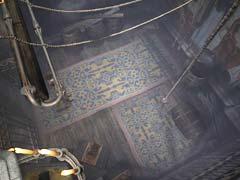
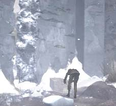

炉のそばにある「マッチ」を入手 炉のレバーを引く(カマから湯気が出る) 炉のカマに対し、「ベニイバラ」を使う (湯気が緑色になる) 下の方にある筒状のものをクリック (筒が開く) 壁につるされたヒモをクリック (筒の中にロウソクの芯が入る) 筒をしめる 蛇口の上の弁を押す (ロウが出てくる) フタを開き、「薬草のロウソク」を入手 ハンスのいる部屋へ移動 机を調べ、「ユコール族の工芸品」、「薬草のロウソク」を使う 「薬草のロウソク」に対し、「マッチ」を使用 (ハンスが目覚める) 絵が描かれた建物へ移動し、奥へ 大修道士が出てきた部屋に入り、「豪華な鍵」を入手  この建物の入り口の横にある扉を調べる 「豪華な鍵」を使用し、中へ入る ひもを引き、鐘を鳴らす  墓地へ移動し、棺桶を移動する ハンスに話しかける (脱出)
| << 前へ |
|